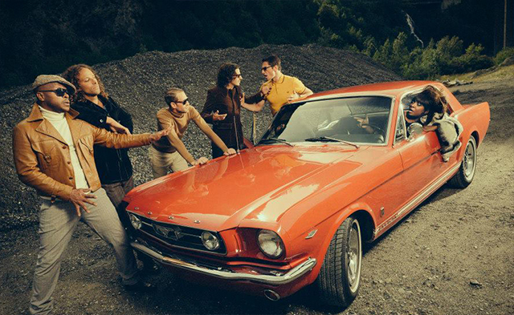
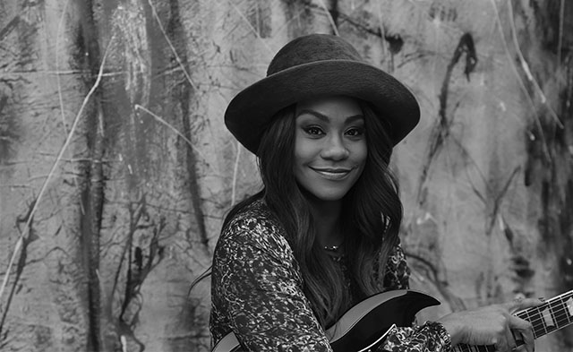

Texte color2
Texte color3
Texte color4
Texte color5
2017
Ceci est un paragraphe retraçant l'édition 2017 du bagnols blues.
« The funkin' SOUL Band! » 8 musiciens, tous unis par le même amour inconditionnel de la Soul Music et du Funk de la fin des années 60 et du début des années 70, sans synthétiseur ni sampling.
« The funkin' SOUL Band! » 8 musiciens, tous unis par le même amour inconditionnel de la Soul Music et du Funk de la fin des années 60 et du début des années 70, sans synthétiseur ni sampling.

« The funkin' SOUL Band! » 8 musiciens, tous unis par le même amour inconditionnel de la Soul Music et du Funk de la fin des années 60 et du début des années 70, sans synthétiseur ni sampling.

« The funkin' SOUL Band! » 8 musiciens, tous unis par le même amour inconditionnel de la Soul Music et du Funk de la fin des années 60 et du début des années 70, sans synthétiseur ni sampling.


« The funkin' SOUL Band! » 8 musiciens, tous unis par le même amour inconditionnel de la Soul Music et du Funk de la fin des années 60 et du début des années 70, sans synthétiseur ni sampling.


« The funkin' SOUL Band! » 8 musiciens, tous unis par le même amour inconditionnel de la Soul Music et du Funk de la fin des années 60 et du début des années 70, sans synthétiseur ni sampling.
2016
Ceci est un paragraphe
Ceci est un titre
Ceci est un paragraphe